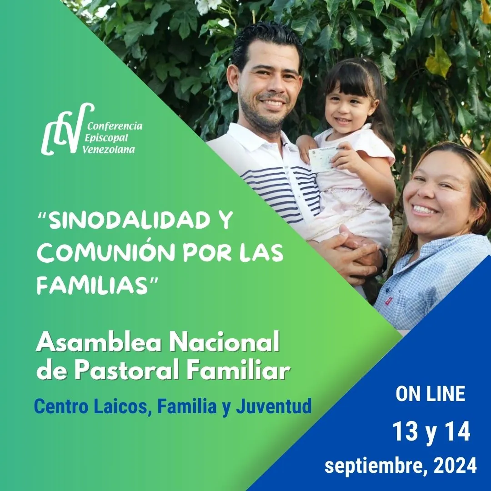

RealizadoRealizadoAsamblea · Familia
Asamblea Nacional de Pastoral Familiar 2024: «Sinodalidad y comunión por las familias»
Asamblea en línea, el 13 y 14 de septiembre de 2024, con una tarde de escucha por diócesis y una mañana de ponencias sobre familia, sinodalidad y misión.

Datos del evento
- Fecha
- Viernes 13 y sábado 14 de septiembre de 2024
- Modalidad y lugar
- Virtual · Zoom
- Organiza
- Área de Familia y Vida del Centro de Laicos, Familia y Juventud, del SPEV de la Conferencia Episcopal Venezolana
- Estado
- Realizado
Cómo fue
La asamblea fue virtual. La primera tarde, de 6 a 8 p. m., se hizo un encuentro para la escucha con el método Conversación en el Espíritu. La idea era armar un panorama nacional de la pastoral familiar desde la realidad y los retos de cada diócesis.
El sábado en la mañana hubo ponencias sobre la pastoral del adulto mayor, la familia misionera en el mundo digital, la familia como casa de amor, y sinodalidad y misión. Saludaron la directora del Centro e invitados del CELAM. La CEV publicó las conclusiones el 23 de septiembre de 2024.
Qué se hizo
- Escucharon a cada diócesis con la Conversación en el Espíritu.
- Siguieron las ponencias del sábado.
- Publicaron sus conclusiones el 23 de septiembre de 2024.
Quién participó
- Saritza Roque, directora del Centro de Laicos, Familia y Juventud.
- El matrimonio coordinador del Área de Familia y Vida, que moderó.
- La directora de prensa de la CEV, como ponente.
- Invitados del CELAM, asesores, matrimonios directores y coordinadores nacionales de programas.